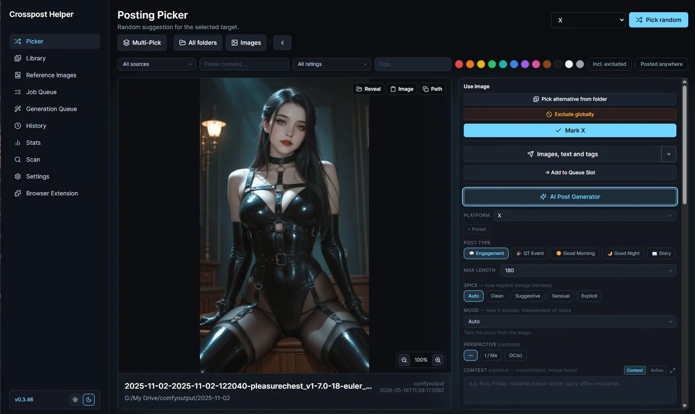
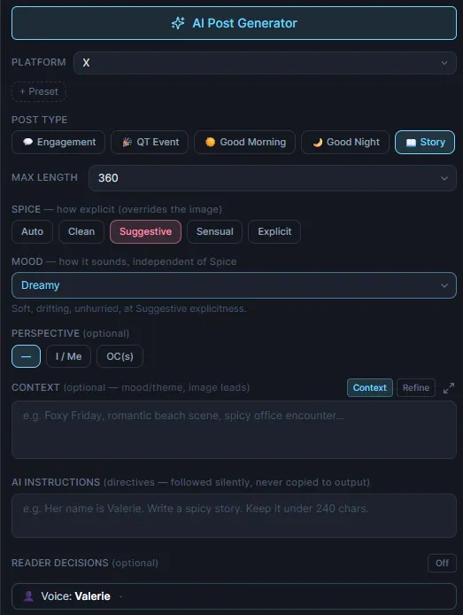
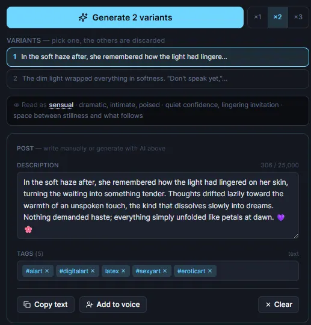
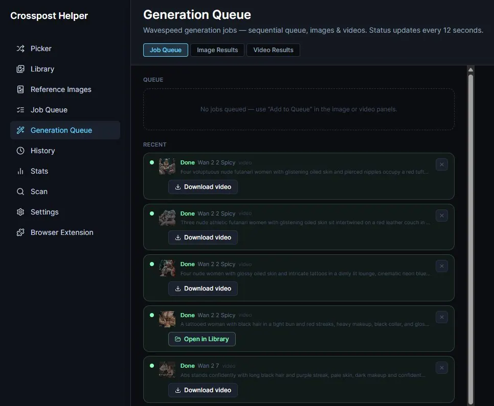

Crossposting Helper
I built a desktop app because I was losing track of my own posts
For a while my posting workflow was a spreadsheet. One column per platform, one row per image, and a lot of squinting to work out whether that particular render had already gone to Bluesky or only to X. Then I would pick something at random, realise halfway through writing the caption that I had posted it three weeks ago, and start over.
So I built the thing I actually wanted. It is called Crosspost Helper, it runs on your own machine, and it is free:
https://valerie-4659.itch.io/crossposthelper

The loop it is built around
Point it at your image folders. It indexes them, reads the generation metadata out of the files, and from then on the loop is:
Pick an image you have not posted to this platform yet. Generate a caption in your voice. Send the image and the text into the composer. Mark it as posted. Next.
Everything else in the app exists to make one of those four steps less annoying.
Picking
The Picker draws a random image that is not already posted to the platform you have selected. Not a dice roll, though: it is a fair shuffle. Every eligible image comes up once before any of them repeats, and a counter tells you which round you are in. When a round runs out it starts a fresh one instead of quietly giving you nothing.
You can narrow the pool before drawing. Folder, rating, date, tags, dominant colour. The tag box suggests tags that actually exist in your library, with the number of images behind each one, so you are not typing blindly into a booru vocabulary and hoping. Colours with nothing behind them are not offered at all - a filter that can only return nothing should not be a button.
If the draw is not the one you wanted, you can browse the siblings in the same folder and swap in an alternative. Everything downstream follows the swap. Or pick several at once for a carousel post, capped at what the platform actually accepts.
Writing
This is the part that took the longest, because "AI writes your caption" is usually a disappointment. Here is what it does instead.
Post types. Engagement, story, morning greeting, good-night, and a QT event format with its fixed layout and credit line.
Two dials that do not interfere with each other. One is how explicit the text gets: clean, suggestive, sensual, explicit, or auto to take it from the image. The other is how it sounds: romantic, dreamy, playful, teasing, personal, matter-of-fact, melancholic, bold.
Those used to be one control, and that was a mistake. "Dreamy" is not a heat level, it is a mood, and having it sit in the middle of a scale between "soft" and "sensual" meant you could never ask for a dreamy explicit post or a dry tender one. Now you can hold one and change the other.

Personas, with actual examples. You define a voice once - tone, emoji habits, free-form personality rules. Then, and this is the part that matters, you paste in real posts of yours as voice samples. A few get rotated into every generation as examples.
Describing a voice in adjectives barely works. Showing a model three things you actually wrote works enormously better, because it copies sentence rhythm, word choice, punctuation habits and where your emojis land instead of following a list of instructions. There is a button on every finished post that adds it back to the sample set, so the voice sharpens the more you use it.
Refine mode. Sometimes I know exactly what I want to say and just cannot be bothered to make it good. So I type it roughly, in German, half-punctuated, and it comes back rewritten in English in my voice and expanded to fill the length I asked for - keeping every idea, name and detail I put in. Not translated. Rewritten as though I had written it in English in the first place.
In this mode the draft outranks the image. The picture only fills in detail where the draft is thin, instead of quietly turning my post into yet another description of what is already visible.
Against everything sounding the same. Four separate things, because there were four separate causes. Every run draws a different structural shape, so posts do not all follow one skeleton. Different voice samples each time. A blacklist of the phrases every model reaches for first - if you have ever read
"the air is thick with" one time too many, you know the ones. And the last few posts you made on that platform go back in as "do not go here again", because the model otherwise has no memory between calls and will happily reuse last week's opening line.
On top of that you can generate up to three independent drafts at once and keep the one that landed. Throwing the weak one away beats editing it.

Tags that behave. Keep your own approved list per platform, sorted into three groups: tags that go on every post, tags picked because they match this particular image, and long shots used only when the match is obvious. A tag can be gated behind a content level, so the spicy ones can never land on a tame picture. Mandatory tags are enforced after generation and invented tags are dropped, because telling a model "only use these" is a suggestion, not a
guarantee.
It shows you what it saw. Every generation returns its own reading of the image - level, mood, emotion, tension - in one line under the result. When a caption is off-key, you can usually see immediately that it misread the picture, and one click pins the correct level for the next attempt. That beats guessing.
Sending
A companion browser extension takes the queued images and the generated text and fills the composer for you on X, Bluesky and DeviantArt. You choose how much it sends: images with text and hashtags, images and text without hashtags, or images only with the text copied to your clipboard for pasting where you want it.
There is also an opt-out on X that attaches everything but does not post, so you can hand it over to X's own scheduler.
CivitAI and Bluesky can be posted to directly from the app, uploading and publishing without a browser in the loop at all.
Keeping track
Every image carries a status per platform. Marking one as posted also marks every file that shares its stem, so the upscale, the variant and the original do not go out as three separate posts a week apart. History shows what went where and when. Stats turns the same data into something you can actually look at.
This is the boring part, and it is the entire reason the app exists.
Understanding your own library
Optional, and it all runs locally on your machine. Models download on demand and nothing analyses anything until you press the button.
- Tagging, which then drives search, filters and the picker's tag pool
- Semantic search, so you can look for what an image is rather than what the file happens to be called
- Grouping visually similar shots, so a batch of forty near-identical renders collapses into one stack you can pick the best from
- Dominant colour, for filtering the library or the random draw
- Duplicate detection across folders, for the re-encodes you forgot about
- Filtering by how many people are in the frame
Generating and upscaling
Video prompts tuned per model - WAN, Kling, Seedance, Grok Imagine, Vidu and others. Each gets its own phrasing order, word budget and content rules, so a prompt written for a permissive model and one written for a strict one are genuinely different texts instead of one prompt that half of them reject.
Wavespeed runs image and video jobs from inside the app, with a queue that survives restarts. Topaz upscaling is in there too, including Bloom 2, with the enhancement prompt generated for you from the image.

What it does not do
It does not have an account. It does not phone home. There is no telemetry and no sync. Your library, your posting history and your keys are a plain database file in your own user folder, and if you delete the app they go with it.
The AI features are bring-your-own-key - OpenAI, Anthropic, Grok or Gemini - and bill to your own provider account. Nothing is proxied through anything of mine, because I do not want to run a service and you should not want me to either.
And it does not post anything on its own. Direct posting and the extension only act when you click.
Getting it
https://valerie-4659.itch.io/crossposthelper
macOS, Windows and Linux. The builds are unsigned, so your operating system will be suspicious the first time - on macOS right-click and choose Open rather than double-clicking, on Windows it is More info then Run anyway. The itch page has the full steps, including the Terminal one-liner for when macOS is being especially stubborn.
Once it is running: add your platforms, point it at your folders, and if you want generated captions, drop in an API key and set up a persona with a handful of your own posts as samples. That last step is genuinely the difference between output that sounds like a language model and output that sounds like you. Do not skip it.
First published on X. Replies and conversation live there.